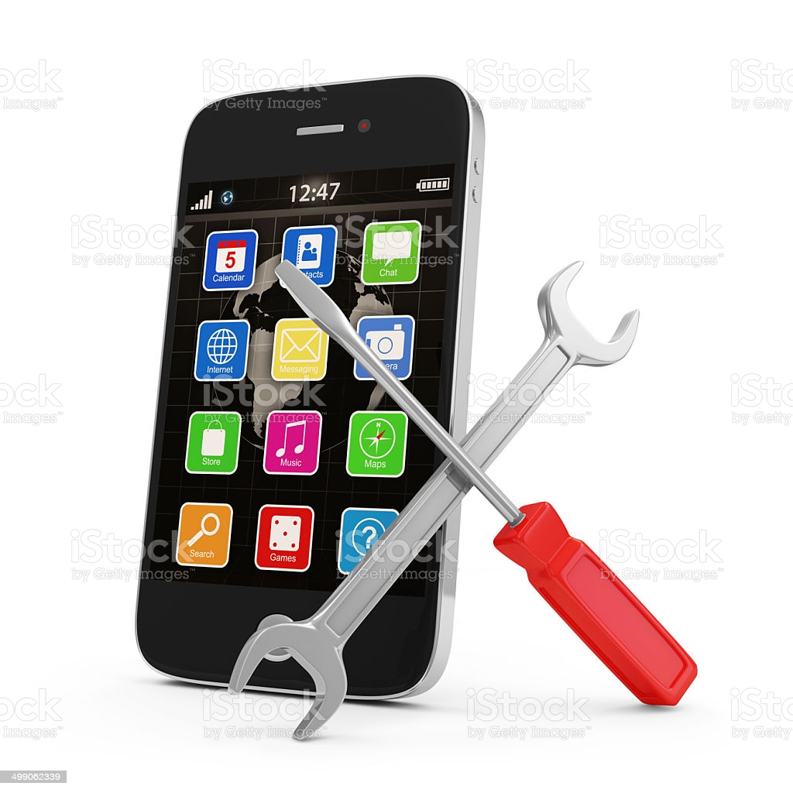
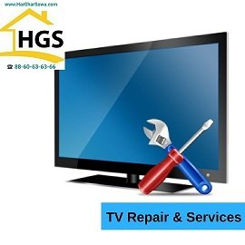
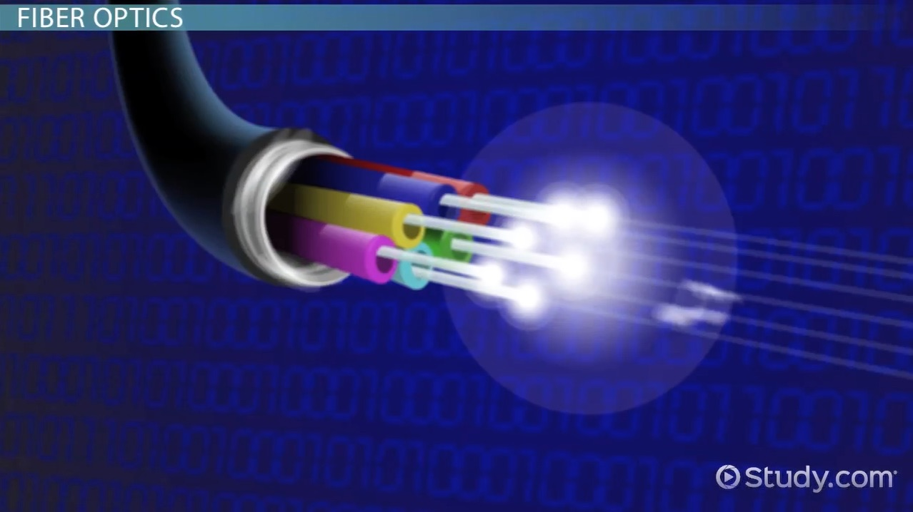

LAPTOP SERVICE

We provide you with extensive laptop repair service. Our chennai laptop expert service in technicians offer laptop chip level service, screen repair, hard disk repair, keyboard and keypad repair, laptop spare sale, broken and laptop repair and other customized services for your laptop
MOBILE SERVICE
The service is content such as news and games delivered to your mobile handset. The service may be requested by a phone call, an SMS, or a request on the Internet to the provider. These services are called a 'premium' service because the service is charged at a premium call rate
TV SERVICES
A TV Repair Technician can either be self employed, recruited by a television manufacturing facility or by an electronics service centre. Such individuals are required for providing after sales support and ensuring the proper functioning of television sets
INTERNET SERVICES
Internet service provides a way for data to be transferred from Internet servers to your computer. An Internet service provider is a company that provides access to the Internet. ... Some of the most common ways to connect to the Internet are dial-up, DSL, cable and wireless services.
course
A course description is a brief summary of the significant learning experiences for a course. Course descriptions appear in individual Course Outlines and in the Program of Studies (POSs) for individual programs.
Desktop
Provides advice and guidance to colleagues regarding incidents. Maintain installed PCs, networks, telephone systems and peripherals with routine maintenance. Identify, log and resolve technical problems with software applications or network systems.